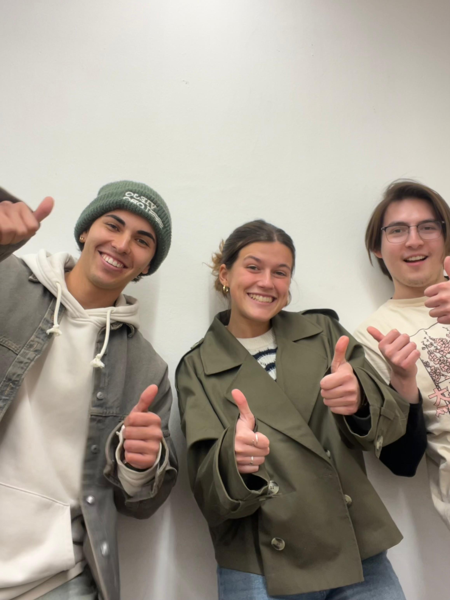

Escuchar Ahora
Reproduce el último episodio directamente o suscríbete en tu plataforma favorita a continuación.
Últimos Episodios
#001 - Más allá de lo humano: promesas y amenazas del Transhumanismo
Publicado: 24 de junio, 2025
¿Estamos ante la evolución de la humanidad o ante la desaparición de lo que significa ser "humano"? El transhumanismo, una corriente que cuestiona y empuja los límites biológicos a través de la técnica, invita a reflexionar sobre el ser humano en el siglo XXI. Con base en las ideas de Nick Bostrom y Pablo Villarroel, debatiremos sobre los riesgos y las promesas que conlleva este proyecto técnico-filosófico.
Escuchar y Notas del EpisodioAcerca del Podcast
Página desarrollada para alojar y darle más emoción y realismo al podcast de FIL2001.
